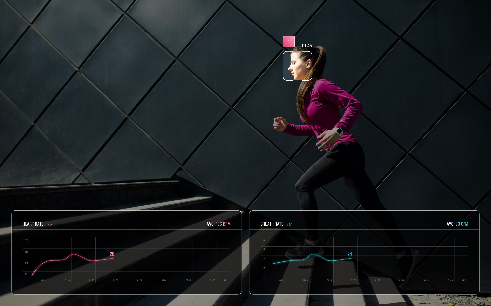
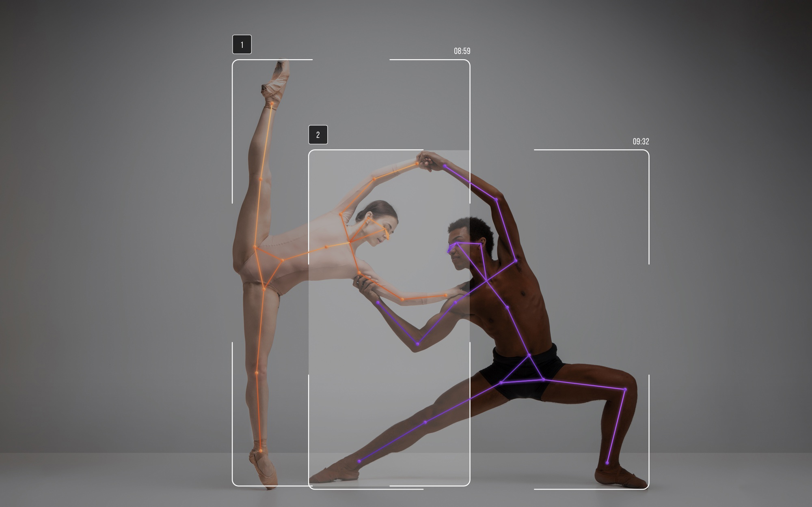

Interaction design
Neurodata Lab builds AI that can recognize everyhting about humans - see them, hear them and empathize them. We call it Human Sensing. Neurodata Lab API service provides developer access to the main modules. (Caution! Nerdy.)
Includes the following modules:
These modules can process images or videos (frame by frame), both pre-loaded and real time.
More states: view with guides and id, hovers and settings. Emotion recognition timeline is a stacked area chart.
Includes the following modules:
These modules can process only videos and have 'cold start' time of 10 and 15 seconds respectively.
Includes the following modules:
These modules can process images or videos (frame by frame), both pre-loaded and real time. Body pose module returns only positions of 18 joints, connections between them is just a feature of the visualization.
Above vizualizations are the first step towards redesign of emotionsdemo.com which we urgently built in the fall 2018. It isn't something I consider a design job, yet there you can try some of our technologies in action - online, for free and without any code.